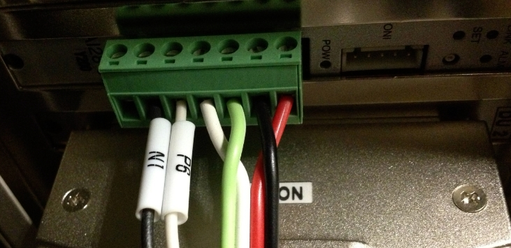
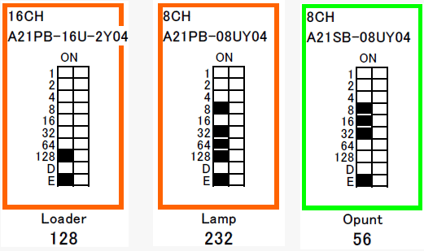

Service History
Subject: NS-8080 War1701 uniwire1 0v short circuit
Handler Model: NS-8080 (NS80-03, S/N: 181215
Controller: RC520
Date: 28 Apr 2010
Symptom
NS-8080 War 1701 uniwire1 0v short circuit.
Action
1. Remote IO card alarm LED found blinking.
2. All IO modules LINK LED blinking abnormally slow.
3. Reset Remote IO card, NG
4. Swap another handler's Remote IO card, NG
5. Removed all Uniwire line from IO card, only connected to Opunt, Loader and Lamp (all inside PSUNT) OK.
6. Found Uniwire connector I.ARM1 (at junction of Input Arm)when connected will caused error.
7. Re-sit I.ARM1 connector, OK.
8. Dry cycle ambient and hot 90 degree at 80% speed, OK
Ref svc report:SR011926
Cause
Loose Uniwire connection for I.ARM1 connector at junction of X & Y Input Arm.
Remarks
Use multi-meter to check Remote IO board below when handler is power off:
1. Between D-G NO short-circuit.
(Resistance: >200 Ohm( Value will be depended on equipment))
2. Between 0-24V NO short-circuit.
(Resistance: >few kOhm (Value will be depended on equipment))

IO Modules in PSUNT:
